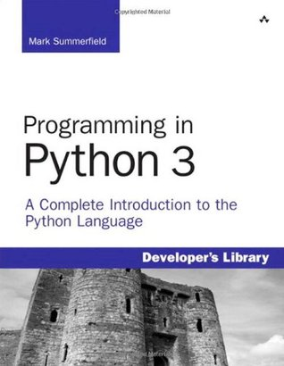

Yesterday wasn't a typical day. It was my birthday. I took a brush to the whiteboard and replaced all the TODOs with the words "Read Python," in an extra large blue custom font I'm calling 'meander.' I packed one of the python books in with a couple of others and took the train to the library.
My idea of a good time really is a quiet nook and a well written book. Not just any nook though. One without noise and one without eyes. I mean to say, I'm the kind of reader that wants people near, but not in my face. I want a little privacy when I enter into the world of thought. And the book? Well, the book matters. These days it's almost always a text book or an economics publication (I read the Economist and the Financial Times). But 'well written,' be it a subjective descriptive, is a mandatory prerequisite.
What can I say? Yesterday, I came close. The money mood was diminished by an obfuscated text. It was 'written good.' Obfuscation presents complexity without keys. The trick is to employ as much undefined esoteric terminology as possible. This is fine in an advanced level text, but the text was not advanced. The experience can render the reader helpless. You need to plod slowly with google at your side, looking up words, or in programming syntax and structure. There is nothing offensive about this if it's unintentional. Find another book, there are many. But it brings me to a complaint I have, and a few additional observations.
Intentional obfuscation is offensive. It's not about the reader, it's about the author, who is out to prove his or her intellectual prowess. To stake out a line in the sand that separates those who get it from those who don't - and in the process prove his own strength. It's a mainstay proven path in academia to a position, but it's not about teaching. And if you find yourself in a class with a teacher whose intentions have nothing to do with you, or in that kind of text-book, drop it.
 Yesterday, I did just that. I left the book at the library and went for coffee. At home on my desk (where I am now) there was a more sequential python book, one that first provides syntax and secondly puts it to work in complexity. At the coffee shop I thought about writers I like to read.
So let's talk for a moment about good writing. And let's say first that the writing is good if the intention is in line with the readers goal. If my goal is to learn python and I'm reading a book noticeably written to prove the author's intellectual prowess, something is out of line. And once things are in line, let's talk about easy and clean sentences. Hemingway made a career from them. I call them short and flat. They're absent too many adjectives, and they get to the point.
Of course Hemingway's point is not to teach but to set the reader in a real experience and emphasize it gruffly; but, if that's what you are looking for, the reading is good. And if you're looking to read just for the sentences and structure, it's good again.
So good writing gets the reader what the reader wants and does it in a pleasant way. That pleasure is about more than content, it's about everything the reader has every listened to and read. It's about linguistic culture and rhythm. It's about stimulation.
I'll go on sometime about all the author's I love to read from (these days I don't have a lot of time to read whole books so I read sentences, paragraphs, and pages from them.) But today, let me mention the ones I thought about yesterday over coffee.
The first one is in this set an outlier. Milton Friedman. It's a testimonial to the power of outliers that I read Friedman for his writing, because I'm against his ideas - but let me point that out in the context of a piece of writing.
I read occasionally from Friedman's essay The Social Responsibility of Business is to Increase it's Profits. His point has long ago been dropped from the social contract, but such a contract of course is not found on paper nor adjudicated in court. The gist is that businesses exist to make profit and return it to shareholders, and should do therefore whatever is necessary to make that happen without regard to social responsibility.
We know today that it's not only okay for businesses to engage in social responsibility, but it's also socially healthy. Shareholders give taxes to government to do what businesses are not charged with, like keeping everyone in our society healthy and protected, but governments are beholden to funders, who have often less altruistic objectives. So on aggregate, shareholders reward socially responsible businesses by purchasing more of their products.
Having said that, strictly in terms of structure and argument, Friedman's essay is a master piece. In it you can find all the usual academic suspects. There's a thesis statement, paragraphs of supporting context, topic and transition sentences, a conclusion, and all of this presented in a natural way. I disagree with Friedman - yes, I do - but it's a testament to the well written word that I enjoy his writing.
Yesterday I thought also about Thomas Piketty. He's in the news again. I didn't read all of "Capital." I read summaries, got the gist of his arguments, and read a few chapters. But boy did I enjoy those chapters. Piketty is an exceptional writer writing on a very present and potentially cataclysmic observation. He makes the point Marx made in a modern way. Marx told us business structure and profit motive would drive average wage under natural wage - or the amount a given individual needed to earn in a lifetime to sustain home and a family - and would result in forced redistribution of wealth in the form of social collapse and revolution.
Piketty says as long as returns on capital are greater than returns on labour, wealth will continue to accumulate in fewer and fewer hands. Moreover, unless the return on labour is high - as is the case with executives and celebrated talents - the return on labour relative the return on capital will stagnate again applying downward wage pressure on an increasingly larger demographic. From an income and inequality perspective, the current economic system is unsustainable.
But there is more to Piketty's writing than his data and argument. Piketty is himself a celebrated talent. Such people deliver their words with graceful articulation, and he is no exception. If you take any pleasure in reading the written word for the merits of its presentation, you will surely find entertainment in Piketty's writing.
Now Piketty has written another book, and I hope it will be as wonderful to read from as his last. Sometimes the second book tries too much to make something that has already been made. As I understand, "Capital and Ideology," among other things, spells out a path to achieve equality and economic sustainability. His fixes aim at redistributing wealth and power. More employee representation on boards, caps on shareholder voting power, very high wealth taxes, and a lump-sum government funded endowment of $132,000 to each person at the age of 25.
Such prescriptions are sure to make if nothing else news and debate. One presumes however they are well thought out. Calculate, for example, the net present value of a 25 year forward payout of $132,000. It cannot be a lot of money. Tie $132,000 to the price of a home and Piketty's fix is akin to a communistic social housing policy. Of course communism fell apart because human nature does not align with equitable distribution. And one can readily imagine barriers that would evolve in practice were a house-sized endowment provided by law to every individual. I'll leave that exercise to you.
So it's almost 8, the morning comes to its end, and I cannot write any longer 😏 Thank you for reading, dear reader, see you next time.
comments powered by Disqus